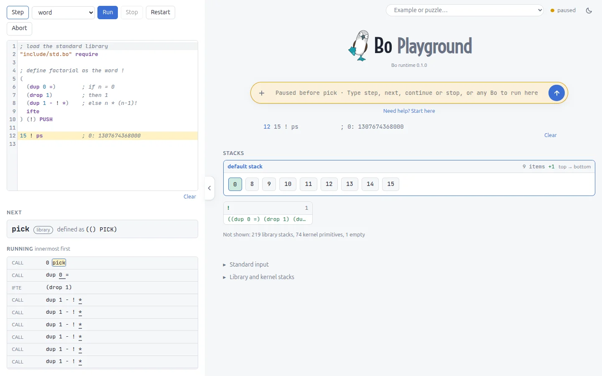

Words flow left to right
Values go on a stack. Words take their inputs from it and leave their results on it. Place words next to each other to combine them.
1 2 + → 3AN EXPERIMENTAL STACK LANGUAGE
Bo is a small language where programs are just lists: you can build them, inspect them, and run them whenever you like. Try it in your browser and watch every step.
Open source · MIT licensed · Draft specification
; load the standard library
"include/std.bo" require
; define factorial as the word !
(
(dup 0 =) ; if n = 0
(drop 1) ; then 1
(dup 1 - ! *) ; else n * (n-1)!
ifte
) (!) PUSH
15 ! ps ; 0: 13076743680001 2 +.THE IDEA
Bo is an exercise in language minimalism: a small set of ideas that invites you to look at programming from another angle.
Values go on a stack. Words take their inputs from it and leave their results on it. Place words next to each other to combine them.
1 2 + → 3A list can hold values or a program. Quote a piece of code, pass it around, and decide when to run it.
(1 2 +) apply → 3There is no separate dictionary: every word names a stack, and its definition is the value on top.
(2 *) (double) PUSH
5 double → 10TRY IT
The playground runs Bo in your browser. Write a program, step through it word by word, and watch the stacks change. Ready-made examples and practice puzzles are one click away.
Try the playgroundNo install, no sign-up. Just bring your curiosity.

THE STORY
Bo began as a revisit of Breeze , a stack-based language I designed in 2015. Breeze knew only numbers and lists of numbers, and a single operator, #, turned them into code.
Bo keeps that spirit (the name stands for Breeze optimized) and has grown a Python reference implementation, a C runtime, a WebAssembly playground, and editor support for VS Code and JupyterLab.
— Mauro DiNuzzo
See Breeze's# rebuilt in Bo
RUN IT LOCALLY
Bo has a C runtime for the command line and a Python reference implementation, tested against each other. The tutorial takes you from your first stack to your first definition.
git clone https://github.com/BoLanguage/bo.git
cd bo
make -C c
c/boNeeds Git and a C compiler. At the prompt, load the standard library with "include/std.bo" require, then try 1 2 + ps. Press Ctrl-D to leave.
make all
make playground-plusA separate local app in which an AI model writes new puzzles for you. With a local Ollama model, nothing leaves your computer. Needs Python 3, Node.js 22.13+, npm and uv; the first make all also downloads Emscripten, which is large. Setup details